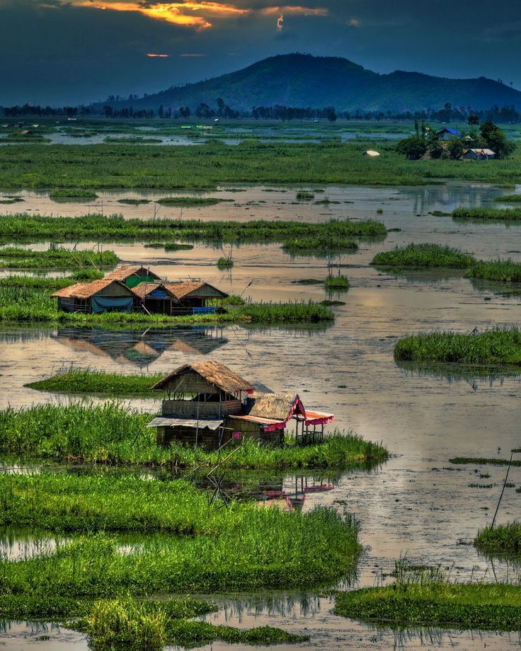

Loktak Lake
Manipur's iconic freshwater lake, famous for its floating phumdis and peaceful landscapes.
Moirang, Bishnupur District, Manipur
View on Map
Why Visit?
- Experience the unique floating islands
- Enjoy scenic lake views and boating
- Explore the surrounding local culture
- Close to Keibul Lamjao National Park
Travel Tips
Best time: October–April
Visit in the morning or around sunset
Carry water and comfortable footwear